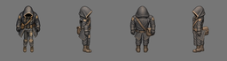
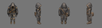
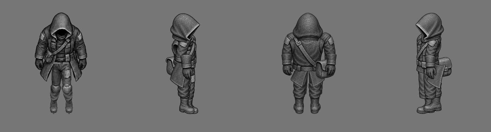
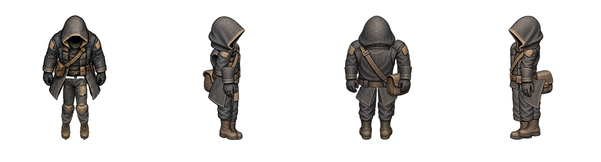
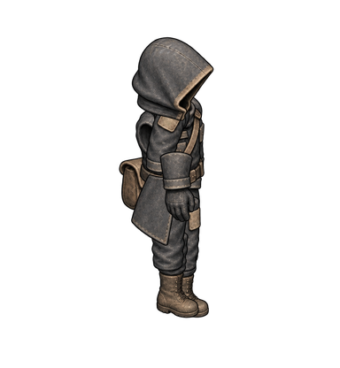
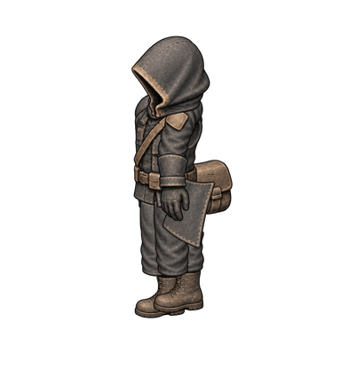

This strip is a comparison of mixed-status samples, not a coherent finished four-facing family.
Panels left to right: 1. HISTORICAL ORIGINAL south (unchanged slim legs, not the separate baggy-south proposal) · 2. PROPOSED east · 3. PROPOSED north (active baggy sample) · 4. PROPOSED west.
East and west are assembled from separate generated component sheets, not mirrored. All side paint is generated, not original master paint. Fidelity is blocked by satchel front/rear placement, coat/material differences and a more level viewpoint. No four-facing fidelity, native expansion, animation or admission is claimed.






README, provenance and limits · east bindings · west bindings